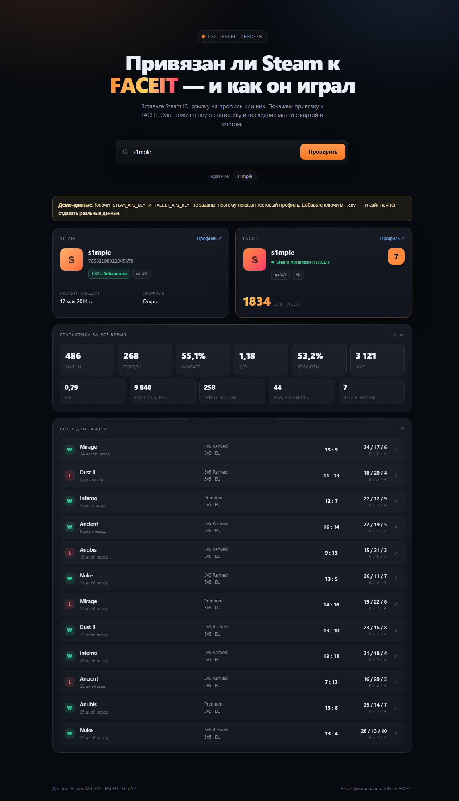

A small look-up service for Counter-Strike 2 players. Paste a Steam ID, profile link or nickname and get the FACEIT link status, Elo, lifetime statistics and the most recent matches with map, score and K/D/A.
Checks whether the Steam account is connected to a FACEIT profile, and returns that profile when it is.
Matches, wins, win rate, K/D, headshot percentage and MVPs for the whole FACEIT career.
The latest games with the map, final score, win or loss and individual K/D/A.
